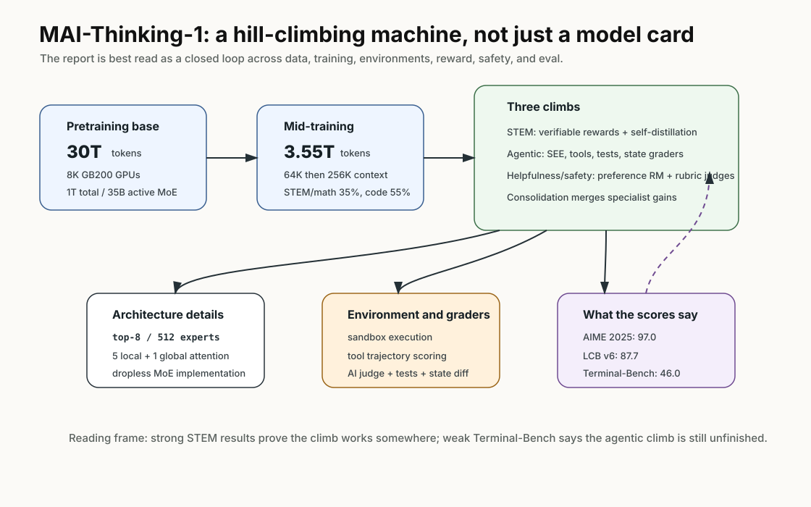
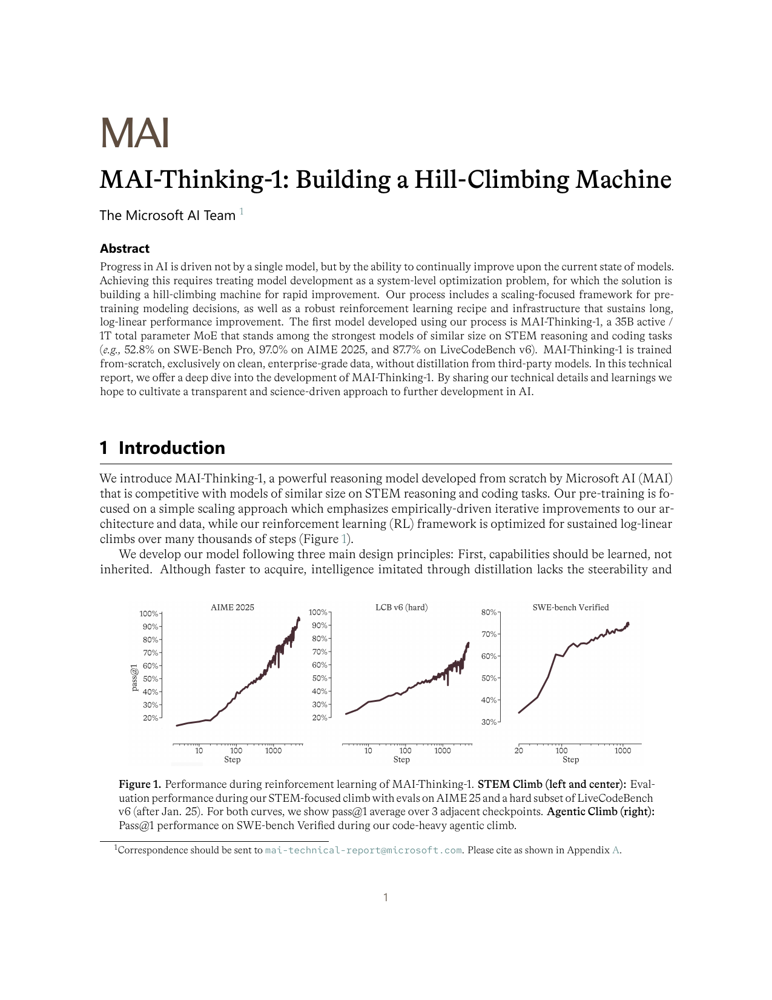
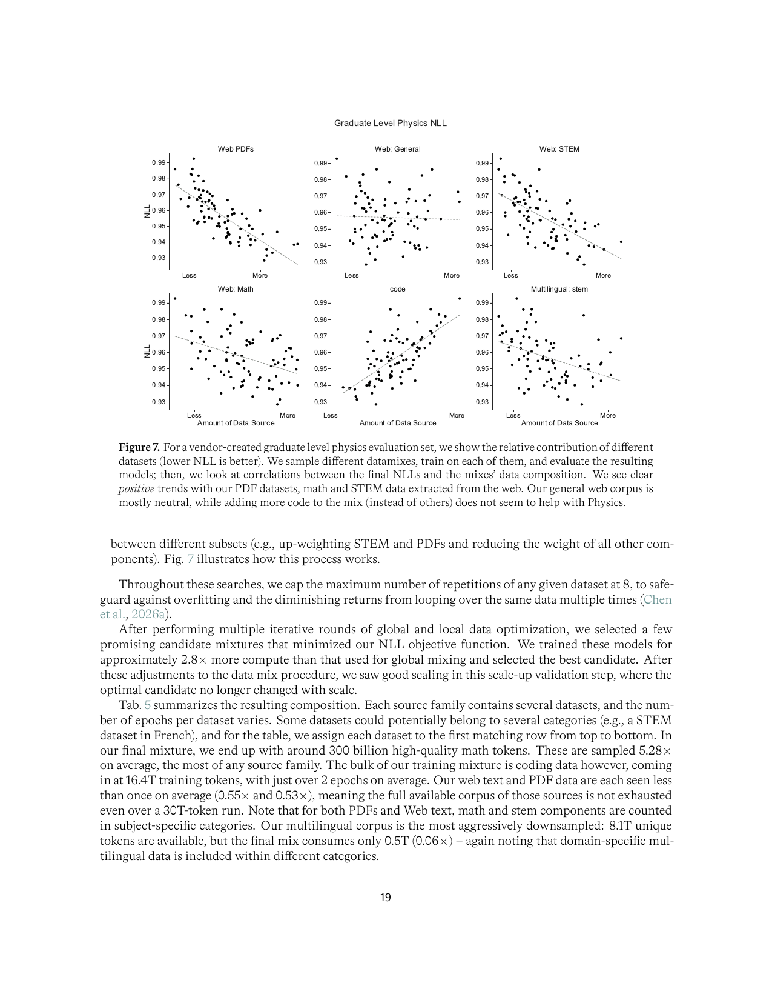
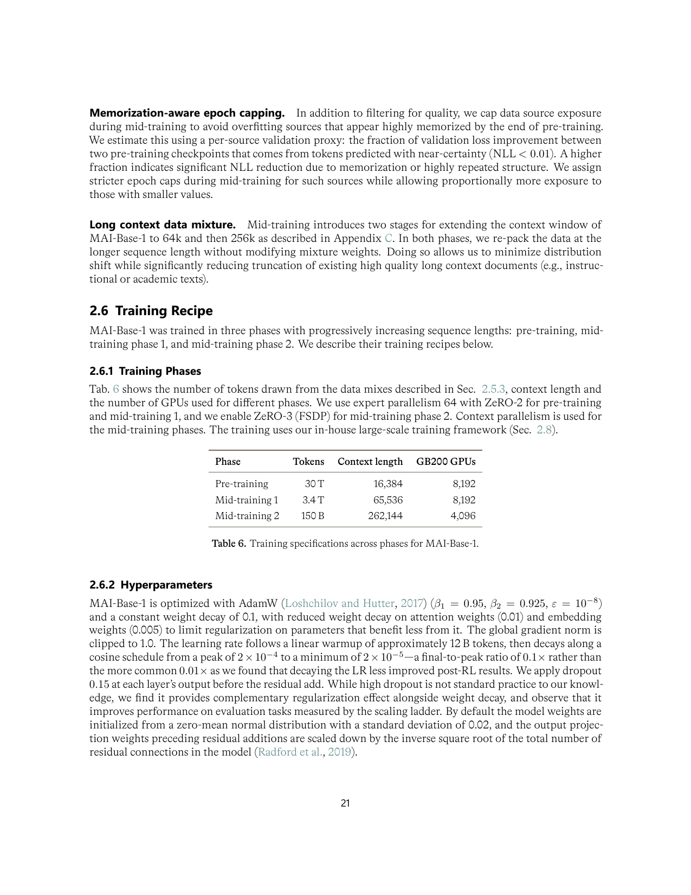
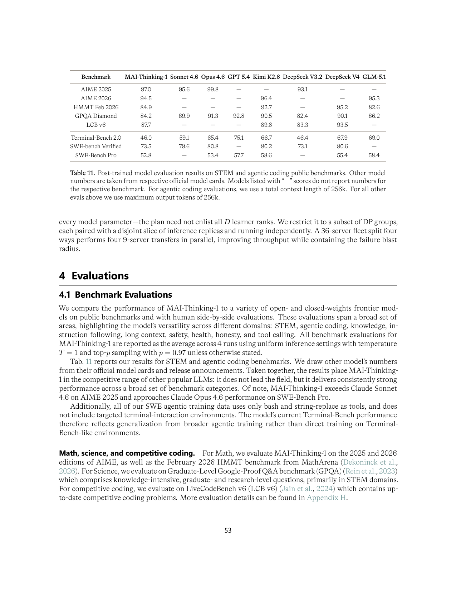

MAI-Thinking-1：这篇更像“如何搭一台爬坡机器”，不是只发布一个模型
- Paper: MAI-Thinking-1: Building a Hill-Climbing Machine
- 机构: Microsoft AI Team
- 类型: model report / pretraining + midtraining + RL system / safety and evaluation report
- 关键词: sparse MoE, hill-climbing machine, GB200, data mixture, STEM RL, agentic RL, 256K context
读法：给人和 agent 的路标
这篇要按“训练组织能力”读，而不是按“某个榜单高不高”读。快速路线是：先看 hill-climbing machine 图，理解 pretraining/mid-training/post-training 三段；再看数据 mixture 和训练 recipe；最后看 Table 11，把 STEM 强项和 agentic coding 弱项分开。
给 agent 以后检索时，关键词是：35B active / 1T total MoE、30T pre-training、3.55T mid-training、256K context、STEM climb、agentic climb、helpfulness safety climb、consolidation、Sandbox Execution Environment。这篇适合和 Composer 2 对照：MAI 写的是通用模型爬坡机器，Composer 写的是产品 coding agent 爬坡机器。
一句话判断
MAI-Thinking-1 的真正主题不是某个单点 benchmark，而是 Microsoft AI 如何把数据、训练基础设施、评测、RL 环境、reward、safety 和部署硬件组织成一台可持续爬坡的机器；模型本身是 35B active / 1T total sparse MoE，强在 STEM reasoning 和 coding，但 agentic coding 还不是全面领先。
图表优先读法
| 先看 | 图/表 | 读完应该抓住什么 |
|---|---|---|
| 1 | hill-climbing machine 图 | 这篇报告讲的是持续爬坡系统，不只是一个模型 checkpoint |
| 2 | data mix / training recipe 表 | 数据、RL、评测、safety 和硬件共同定义模型能力 |
| 3 | RL climb 图 | post-training 是多轮改进闭环，不是一次 SFT/RL |
| 4 | evaluation table | STEM/coding 强，但 agentic coding 不是全面领先 |
| 5 | 附录 case | 具体失败/成功样例比总分更能说明模型边界 |
先抓住四个点
- 模型规模和训练来源很明确。 MAI-Base-1 是 35B active / 1T total sparse MoE，从零开始在 8K GB200 上训练，预训练 30T tokens，声明不使用第三方模型蒸馏。
- 架构选择很工程化。 decoder-only Transformer，周期性 local/global attention，dense FFN 和 MoE 交替，MoE 是 top-8/512 experts，tokenizer 用
o200k_base，vocab 200,019。 - mid-training 明显偏 STEM/math/code。 预训练后再做 3.55T mid-training，上下文扩到 64K 再到 256K；中期 mixture 里 STEM/math 35%、code 55%、background 10%。
- post-training 是多条 climb 合并。 STEM climb、agentic climb、helpfulness/safety climb 都有各自 reward 和数据管线，最后通过 consolidation 汇成 MAI-Thinking-1。
先看我整理的结构图

MAI-Thinking-1 最适合被读成一台持续爬坡的机器：pretraining/mid-training 提供底座，STEM、agentic、helpfulness/safety 三条 climb 分别优化，再通过 consolidation 合并。它的强 STEM 分数说明这套机器在某些方向已经能爬，Terminal-Bench 46.0 则提醒 agentic climb 还没到全面领先。
图里有三个锚点：
- 底座很重：35B active / 1T total sparse MoE，加上 30T pre-training 和 3.55T mid-training，说明 post-training 不是凭空变魔法。
- climb 是分工的：数学/科学、agentic coding、helpfulness/safety 分开爬，再 consolidation，避免一个混合 RL 目标互相污染。
- 结果不均衡：STEM climb 很有效，agentic coding 仍明显落后 Kimi/DeepSeek/GPT，这恰好说明报告没有把短板藏起来。
论文原图 / 数据作为证据

Figure 1 是标题里 hill-climbing 的直观证据：模型在 STEM 和 coding RL 过程中持续爬升。它不是解释机制的图，但解释了这篇报告为什么把“机器”而不是“模型”放在中心。
这张图的价值不是告诉我们“RL 一定有效”，而是提醒读者看这篇报告时要关注 爬坡过程：数据、环境、reward、grader、失败分析、consolidation 怎样让能力持续变好。单个 checkpoint 分数只是这台机器跑出来的一帧。
模型架构
| 项 | MAI-Base-1 / MAI-Thinking-1 |
|---|---|
| 模型类型 | Decoder-only Transformer |
| 参数规模 | 35B active / 1T total sparse MoE |
| 训练硬件 | 8K GB200 GPUs on Azure |
| Tokenizer | o200k_base |
| Vocabulary size | 200,019 |
| Attention | 周期性 local/global attention，5 local + 1 global |
| Local attention window | 512 |
| KV heads | 8 |
| MoE | top-8 / 512 experts |
| MoE implementation | LatentMoE，routing based on original representation |
| Context after mid-training | 256K |
两个设计细节值得记：
- 它没有每层都用 MoE，而是高稀疏 MoE 与 dense FFN 交错。作者认为这种设计在 wall-clock 上更有效。
- 它用了 fully dropless MoE implementation，避免 token dropping 带来的因果泄漏和容量相关结论偏移。
数据 Pipeline

预训练数据构成很具体：
| Source family | Unique tokens | Training tokens | Mix % | Avg epochs |
|---|---|---|---|---|
| Code | 7.4T | 16.4T | 54.6% | 2.22x |
| STEM | 2.2T | 4.7T | 15.8% | 2.17x |
| Math | 0.3T | 1.6T | 5.4% | 5.28x |
| Books and journals | 0.6T | 0.9T | 3.1% | 1.65x |
| PDFs | 2.7T | 1.4T | 4.7% | 0.53x |
| Web text | 8.1T | 4.5T | 14.9% | 0.55x |
| Multilingual other | 8.1T | 0.5T | 1.6% | 0.06x |
| Total | 29.2T | 30.0T | 100.0% | 1.03x |
几个数据细节有价值：
- Math unique token 只有 0.3T，但训练 token 1.6T，平均 5.28x，是最高重复采样。
- Code 是最大头，16.4T training tokens，占 54.6%。
- Web text 和 PDF 都没有吃完整 corpus，分别 0.55x 和 0.53x。
- 多语言 other 被强烈下采样，8.1T unique 只取 0.5T。
中期训练不引入新 synthetic source，而是从预训练 corpus 里筛更高质量子集，并重新加权：
| Mid-training 类别 | 比例 |
|---|---|
| STEM/math | 35% |
| Code | 55% |
| Background | 10% |
代码数据还做了两个额外处理：
- 按 repo quality tier 过滤 file extension。比如 HTML/CSS/SVG 在高质量 repo 里可能是正常前端工程，在低质量 repo 里可能是孤立低质页面。
- 同时使用 repo-level format 和 file-level document format，让模型既学仓库整体，也学单文件理解。
训练 Recipe

| Phase | Tokens | Context length | GB200 GPUs |
|---|---|---|---|
| Pre-training | 30T | 16,384 | 8,192 |
| Mid-training 1 | 3.4T | 65,536 | 8,192 |
| Mid-training 2 | 150B | 262,144 | 4,096 |
超参也给得很细：
- Optimizer: AdamW
beta1=0.95beta2=0.925epsilon=1e-8- weight decay 0.1，attention weights 0.01，embedding weights 0.005
- global gradient norm clip 1.0
- warmup 约 12B tokens
- peak LR
2e-4，minimum LR2e-5 - layer output dropout 0.15
这些细节说明它不是只有 benchmark，而是想公开一部分可审计的训练 recipe。
这张训练 recipe 表的意义是：它把“长上下文能力”放进训练阶段，而不是只在推理时拉大窗口。先 16K pre-training，再 64K mid-training，最后短阶段扩到 256K，这是一条更省钱的路线。对个人项目的类比是：不要一开始就把所有材料塞进最大上下文，先让流程在短上下文里稳定，再扩大任务长度。
Post-training / Hill-Climbing Pipeline
MAI-Thinking-1 的 post-training 分三条主线：
| Climb | 目标 | Reward / 训练信号 |
|---|---|---|
| STEM climb | 数学、科学、竞赛编程 | verifiable rewards、self-distillation、长度扩展 |
| Agentic climb | SWE、工具使用、多步环境交互 | sandbox execution environment、测试/状态 reward、AI feedback |
| Helpfulness & safety climb | 人类偏好、IF、安全、诚实、风格 | human preference reward model、rubric AI judge、verifiable rewards |
Agentic climb 的 loop 很接近真实 coding agent：
- 环境给出 task specification。
- 模型在 SEE，也就是 Sandbox Execution Environment 中产生 tool calls 或 final answer。
- 工具输出被 append 回上下文。
- 多步 trajectory 完成后由 tests、state comparison、AI judge 等 grader 评分。
- credit assignment 统一作用到所有 policy steps 的 tokens。
软件工程任务里工具包括 read/edit files、shell commands、inspect repository state。General tool use 则是结构化工具和可变 task state，例如数据库。
这里和 Harness Engineering 的关系很强：MAI 的 agentic climb 本质上是在一个 sandbox harness 里训练模型。模型不是只回答文本，而是在 SEE 里调用工具、观察状态、被 grader 评分。这说明“agent 能力”越来越像模型和环境共同训练出来的东西，而不是单靠 instruction tuning。
关键结果

| Benchmark | MAI-Thinking-1 | Kimi K2.6 | DeepSeek V4 | GLM-5.1 | Opus 4.6 | GPT-5.4 |
|---|---|---|---|---|---|---|
| AIME 2025 | 97.0 | - | - | - | 99.8 | - |
| AIME 2026 | 94.5 | 96.4 | - | 95.3 | - | - |
| HMMT Feb 2026 | 84.9 | 92.7 | 95.2 | 82.6 | - | - |
| GPQA Diamond | 84.2 | 90.5 | 90.1 | 86.2 | 91.3 | 92.8 |
| LCB v6 | 87.7 | 89.6 | 93.5 | - | - | - |
| Terminal-Bench 2.0 | 46.0 | 66.7 | 67.9 | 69.0 | 65.4 | 75.1 |
| SWE-bench Verified | 73.5 | 80.2 | 80.6 | - | 80.8 | - |
| SWE-Bench Pro | 52.8 | 58.6 | 55.4 | 58.4 | 53.4 | 57.7 |
读法：
- MAI-Thinking-1 的 STEM 能力很强，AIME 2025 97.0 是亮点。
- Coding reasoning 也不错，LCB v6 87.7，但不如 DeepSeek V4 和 Kimi K2.6。
- Agentic coding 不是它最强项。Terminal-Bench 2.0 46.0 明显落后；SWE-bench Verified 73.5 也低于 Kimi/DeepSeek/Opus。
- SWE-Bench Pro 52.8 接近 Opus 4.6 的 53.4，但低于 Kimi K2.6、DeepSeek V4、GLM-5.1、GPT-5.4。
所以这篇不能读成“MAI 全面超过 frontier coding models”。更准确的定位是：它展示了 Microsoft AI 自建 hill-climbing pipeline 的第一代结果，在 STEM 很强，在 agentic coding 仍有明显提升空间。
这个结论很重要，因为它防止误读：MAI-Thinking-1 是一份透明度很高的训练系统报告，不是一份“全面领先 coding agent”报告。它真正值得学的是怎么组织爬坡机器，而不是拿 Terminal-Bench 46.0 去吹 coding agent。
Agentic coding 评测细节
Appendix I 里有具体设置：
- SWE-bench Verified、SWE-Bench Pro、Terminal-Bench 2.0 都是多轮环境交互。
- 使用简单 ReAct-style always-append agent loop。
- 总 context length 256K tokens。
- SWE-bench Verified / Pro 最大输出 8K tokens。
- Terminal-Bench 2.0 最大输出 32K tokens。
- 最大 1,000 steps。
- SWE-bench Verified / Pro 使用和训练 climb 相同的两个工具：bash 和 string replace editor。
- Terminal-Bench 2.0 只使用 bash tool。
这个设置对解读分数很重要：它的 agentic coding 并不是复杂 IDE harness，也不是和 Cursor 一样的产品工具集，而是相对简单的 ReAct loop。
因此，MAI 的 agentic coding 分数有两种读法：一方面，它说明模型和基础 RL 还需要继续爬；另一方面，它也可能低估了模型在更强 harness 下的潜力。和 Composer 2 对比会很有意思：Composer 的优势恰恰在于产品 harness、真实 CursorBench 和复杂基础设施。
附录里值得看的 case
Appendix D 讲了一些 reasoning behavior。一个 AIME case 里，强模型会先推导候选 k，再用 domain condition 排除不合法解；弱模型则更像从可见 root 猜 candidate，最后漏掉 corner case。
这个例子想表达的不是“会写更长 CoT”，而是强 reasoning model 会更愿意怀疑自己的中间结论，重新检查 domain constraint 和边界条件。这和作者所谓 hill-climbing 里的 behavior evolution 是一致的：RL 不只是提高最终分数，也在塑造解题习惯。
我怎么看
可信之处：
- 训练数据、模型架构、阶段 tokens、上下文长度、GPU 数、超参给得很细，透明度高。
- Table 11 没有掩盖 Terminal-Bench 明显弱项。
- 数据 mixture 和 rank non-invariance 的讨论很有价值：小规模最优 mixture 不一定是大规模最优 mixture。
- 256K long-context extension 的附录很实用，尤其是先 64K mid-training 再短阶段扩到 256K 的 recipe。
需要警惕：
- 报告很长，很多评测和数据是内部构造，外部无法完全复查。
- “无第三方模型蒸馏”是重要声明，但仍有大量数据过滤、AI judge、synthetic environment 细节依赖内部系统。
- Agentic coding 结果说明这台机器还在爬坡，不能只拿 AIME 高分外推到 coding agent。
对我的价值
如果把这篇放进个人研究线，我会记三件事：
- 数据 mixture 要按目标能力重配。 paper-reading/coding agent 的数据不应只堆 web text，代码、STEM、长文档、工具轨迹要分桶。
- 长上下文扩展可以是短阶段校准。 不是所有训练都要在最大 context 下烧钱，先短 context 建能力，再做 target context extension 可能更划算。
- agent pipeline 要用环境和 grader。 真正的 coding agent 训练信号来自环境状态、测试、工具轨迹和行为质量，而不是单轮文本偏好。
我还会把它变成一个个人 wiki 原则：想让一个长期 workflow 变强，不能只改 prompt。要有数据分桶、任务环境、外部 grader、失败记录、阶段性 consolidation。paper-reading pipeline 也是一样，先保证来源、图、公式、构建、部署这些环节都有检查点，再谈“自动读得更好”。
一句话收束
MAI-Thinking-1 最值得记住的不是 97.0 AIME，而是“hill-climbing machine”这个工程范式：模型能力来自数据、基础设施、评测、环境、reward 和安全系统持续闭环，而不只是一次训练 run。